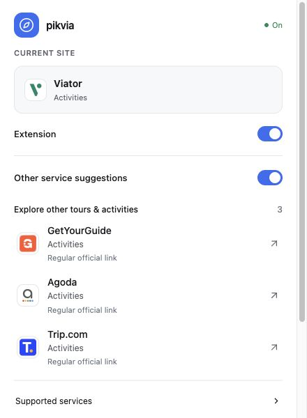

Visita un sitio compatible
El sitio y la categoría de la página se reconocen en tu dispositivo.
pikvia · RUSHLABS
Una extensión de Chrome para descubrir servicios relevantes al navegar por sitios de viajes. El usuario consulta las sugerencias y decide qué sitio visitar.

pikvia une «pick» (elegir) y «via» (a través de): un camino útil para decidir. Descubre servicios relevantes y elige adónde te llevará tu próximo clic.
El sitio y la categoría de la página se reconocen en tu dispositivo.
Hasta tres alternativas aparecen en la ventana o en un pequeño panel.
La recomendación solo abre una pestaña nueva cuando haces clic.
Ventana real en inglés capturada en una prueba de desarrollo (v0.4.3). Los nombres identifican servicios y no implican afiliación ni respaldo.
El catálogo incluye viajes y servicios relacionados. Reconocer un sitio no significa tener aprobación de afiliación.
Para redes y anunciantes que revisan tráfico de extensiones. Verificamos el permiso de cada programa antes de activar enlaces monetizados.
Sin redirecciones automáticas ni aplicación de enlaces afiliados en segundo plano en sitios reales.
Los enlaces afiliados configurados se identifican. Las compras pueden generar comisiones para el operador de la cuenta configurada.
Se conservan los parámetros publisher detectados. No se leen cookies.
Sin configuración aprobada se usan enlaces normales. No hay descuentos ni reembolsos verificados activados actualmente.
Pide a RushLabs una versión de revisión, una explicación del flujo de referidos o una conversación sobre los requisitos de tu programa.